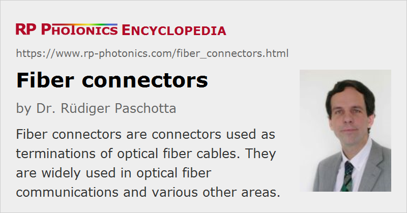

Fiber Connectors
Definition: connectors used as terminations of optical fiber cables
German: Faserstecker
Category: fiber optics and waveguides
How to cite the article; suggest additional literature
Author: Dr. Rüdiger Paschotta
Fiber connectors are often used as the terminations of optical fiber cables in order to provide non-permanent connections between fiber-coupled devices (a kind of removable fiber joints). They are used in a similar manner as electrical connectors.
Typically, a connector assembly comprises an adapter and two connector plugs, where one fiber is inserted into every connector plug. The process of fitting a connector plug to a fiber is more delicate than for most electrical connections:

- First, a clean fiber end must be prepared, usually with a fiber cleaver. It must be made sure that the orientation of the fiber interface is correct, e.g. perpendicular to the fiber axis or with some defined angle against it (e.g. 8°). This might be checked e.g. with a microscope.
- Then the fiber end needs to be carefully inserted into the connector plug. Its position must be precisely correct, and the fiber end should not be damaged during that process. Depending on the type of fiber connector, a detailed procedure must be followed, which may include the proper preparation and cleaning of the plug and some polishing of the fiber tip. Most connectors require a type of epoxy or other adhesive to fix the fiber.
- In sensitive cases, it may be necessary to measure the insertion loss and/or return loss (see below), as it may otherwise be more cumbersome to locate a fault later on.
These termination assembly operations are often performed in factories, but with suitable equipment they can also be done in the field, preferably in a reasonably clean environment.
Although fiber connectors give some protection to the inserted fibers, that protection is quite incomplete, e.g. concerning moisture. Therefore, connectors may be put into protective enclosures. Hermetically sealed enclosures protect most reliably against moisture and dirt, but can hinder the dissipating of heat (e.g. from connector losses in high-power operation). Dust caps are often used during times where a connector is not plugged in.
Characteristics of Optical Fiber Connectors
The following characteristics can be relevant for the selection of fiber connectors:
- A connector should provide a reliable low-loss contact in the plugged-in state. One specifies a typical coupling loss in decibels. It is called the attenuation or insertion loss. Its measurement is defined by IEC standard 61753-1. Typical values of the insertion loss are of the order of 0.5 dB. When the same connector is plugged in and out repeatedly, the insertion loss may exhibit significant variations (non-perfect repeatability).
- For sensitive applications, the reflection loss (= return loss), i.e., the attenuation for light being reflected at the interface, can also be relevant; it should be as high as possible.
Values above 20 dB (i.e., less than 1 % reflectivity) are easily achieved – with some connector versions (HRL = high return loss) even more than 50 dB.
Note that the insertion losses are usually substantially higher than what one would expect from the return loss alone – particularly for fiber connectors using angled fiber ends, where reflected light does not get back into the fiber.
Note also that increased reflections can occur as a result of a tiny air gap between the connectorized fibers (e.g. due to an incorrect angle of the fiber tip): the Fresnel reflections at both interfaces can cancel each other only if the gap width is much smaller than one wavelength.
In principle, one could also suppress reflections with anti-reflection coatings on the fiber ends, but this technique is not very common due to various practical issues, such as the fragility of coatings and the substantial effort to produce them. - Many fiber connectors are rarely disconnected or reconnected in normal use, but for some application a higher number of reconnections (mating cycles) must be possible during the connector's lifetime. Thousands of mating cycles are not easily achieved, as the contact between the fiber ends needs to be very precise and clean.
- It may also matter how easily and reliably fibers can be connectorized, particularly if that needs to be done in the field. The sensitivity to environmental factors such as cleanliness and vibrations also varies, and the required equipment depends on the connector type.
- In some cases, the power handling capability is relevant.
- There are multi-fiber connectors, which can connect multiple fibers.
- The dimensions of connectors are relevant particularly if many connections need to be done to devices of moderate size.
Types of Optical Fiber Connectors
The most common fiber connectors are those of ST, FC, SC and LC type, and there are various versions of those. A short overview is given in the following:
ST Connectors
ST connectors are most popular for fiber-optic networks based on multimode fibers, as are usually used within buildings. The fiber is placed in a relatively long cylindrical keyed ferrule (often made of ceramic), providing a tight contact (physical contact) of the fiber ends. ST connectors contain a spring-loaded bayonet mount.
FC Connectors
FC connectors (“fixed connection”) are a popular type for single-mode fibers. They contain a floating ferrule with 2.5 mm diameter, into which the fiber is inserted (with the risk of scratching the fiber end). They provide a good mechanical isolation of the contact, allowing the use in high-vibration environments, but need to be handled quite carefully, with alignment of the ferrule's key when plugging it in. That key prevents rotation of the fiber when the plug is screwed into the receptacle. This is important for angled fiber ends (see below) and for polarization-maintaining fibers. Unfortunately, there are two mutually incompatible versions with key widths of 2 mm (reduced version, “type R”) and 2.14 mm (“type N”), respectively.
The standard version FC/PC involves a standard “physical contact” with a slightly rounded fiber surface; the fiber tip is polished after insertion into the ferrule. The ferrule is spring-loaded, providing a well-defined contact force when the connector is plugged in. Higher-quality fiber tip polishing is used in FC/SPC and FC/UPC connectors (with “super” or “ultra” polish). This provides higher return loss and lower insertion loss.
FC/APC connectors use angled fiber ends in order to obtain a high return loss (even in the disconnected state), but normally at the cost of increased insertion loss. Of course, fiber ends with a carefully controlled tilt angle are more difficult to make, and the two angled fibers need to be inserted properly such the surfaces fit together.
FC connectors are often used for single-mode fibers including polarization-maintaining fibers, but are increasingly replaced with SC and LC connectors.
SC Connectors
SC connectors (“subscriber connectors”) are general purpose connectors of push/pull snap-in type for single-mode fibers. The fiber lies in a ceramic ferrule, and its orientation is controlled with a key. The rectangular shape of the connector leads to a defined orientation concerning rotations (in contrast e.g. to FC connectors). The snap-in mechanism makes the handling less critical than with FC connectors.
SC connectors are increasingly used in network applications, particularly with single-mode fibers. They are also available in duplex versions.
LC Connectors
LC connectors (“Lucent connectors”) are particularly small, belonging to the “small form factor” connectors (SFF connectors). It contains a ferrule with only 1.25 mm diameter. It is often used for single-mode fibers. Duplex versions are also available.
Applications of Fiber Connectors
As fiber optics are intensively used for optical fiber communications, many fiber connectors are also used in that context – for example, in central offices of telephone companies, at Internet backbones or in fiber to the home installations.
Laboratories also often use fiber cables with connectors, e.g. for transporting light to diagnostic instruments such as fiber-optic power meters and spectrometers. For complex setups such as mode-locked fiber lasers, for example, it is less common to use fiber connectors, partly because of the detrimental effects even of very small return losses. Mechanical splicing or fusion splicing is then often a better option.
Multimode fiber connectors are often installed in the field. Single-mode connectors, having tighter tolerances, are usually combined with their fibers in factories. In the field, one may fusion-splice such pig-tailed single-mode connectors to cables. (Single-mode connectors installed in the field tend to have higher losses.)
Suppliers
The RP Photonics Buyer's Guide contains 74 suppliers for fiber connectors.
Questions and Comments from Users
Here you can submit questions and comments. As far as they get accepted by the author, they will appear above this paragraph together with the author’s answer. The author will decide on acceptance based on certain criteria. Essentially, the issue must be of sufficiently broad interest.
Please do not enter personal data here; we would otherwise delete it soon. (See also our privacy declaration.) If you wish to receive personal feedback or consultancy from the author, please contact him e.g. via e-mail.
By submitting the information, you give your consent to the potential publication of your inputs on our website according to our rules. (If you later retract your consent, we will delete those inputs.) As your inputs are first reviewed by the author, they may be published with some delay.
See also: fiber cables, fibers, fiber optics, fiber joints, fiber to the home, fiber collimators
and other articles in the category fiber optics and waveguides
|  |
If you like this page, please share the link with your friends and colleagues, e.g. via social media:
These sharing buttons are implemented in a privacy-friendly way!